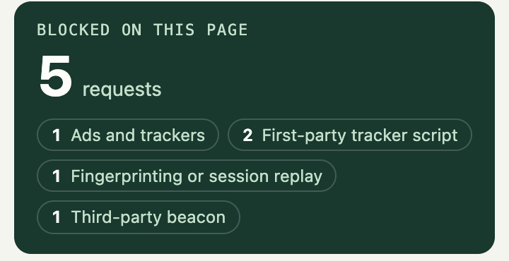
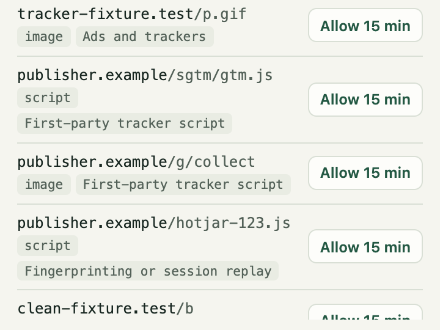
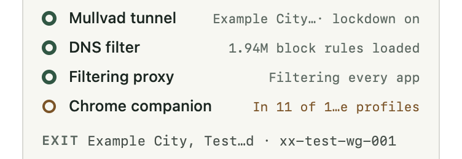
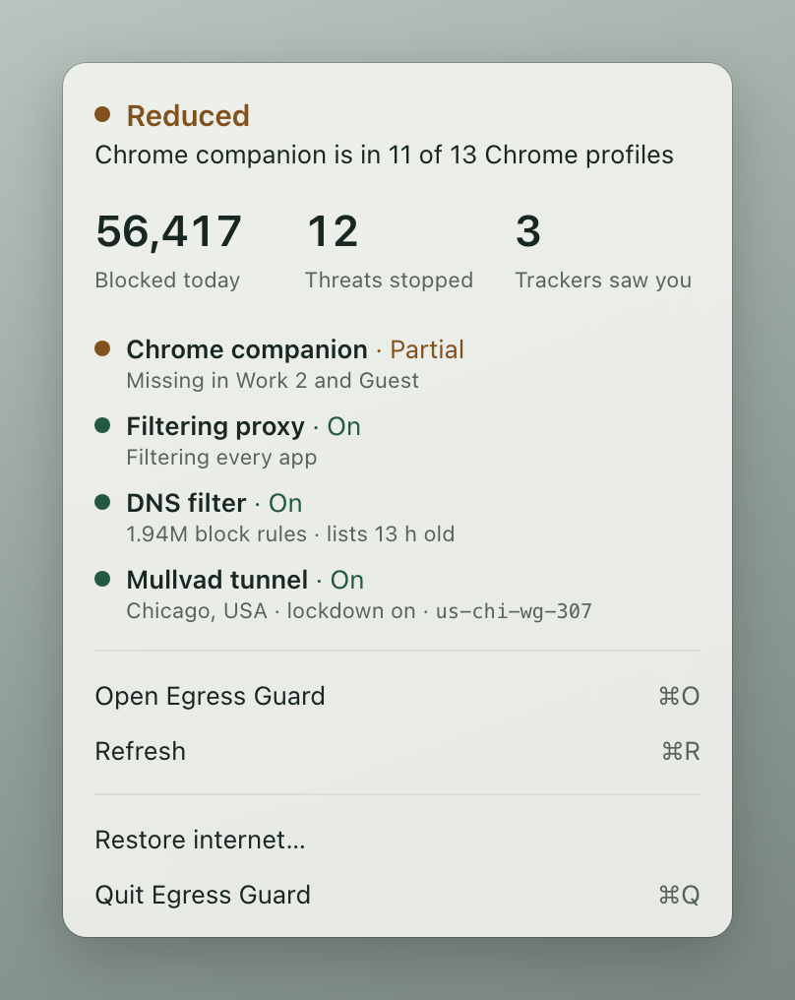
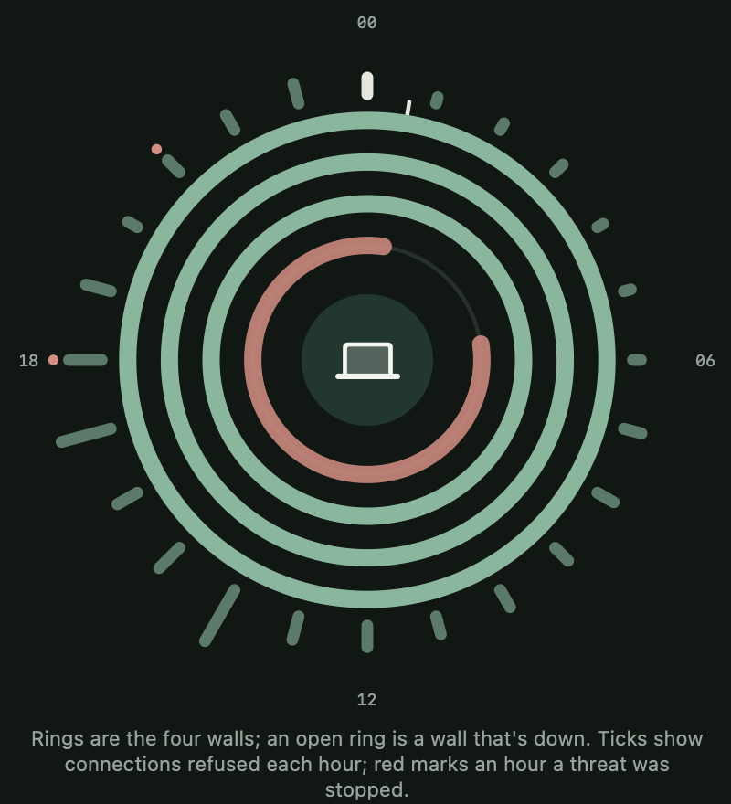
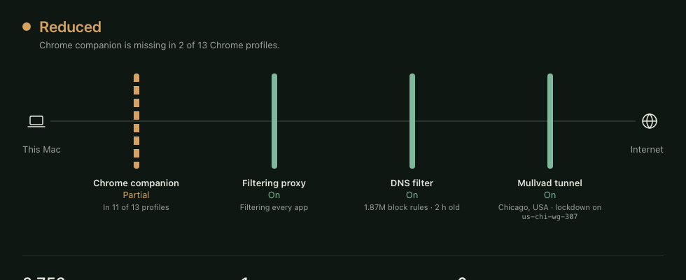
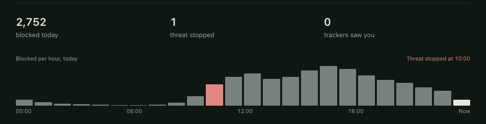
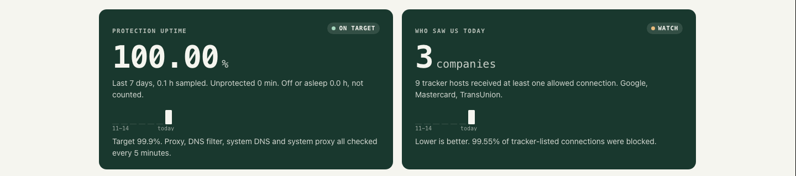
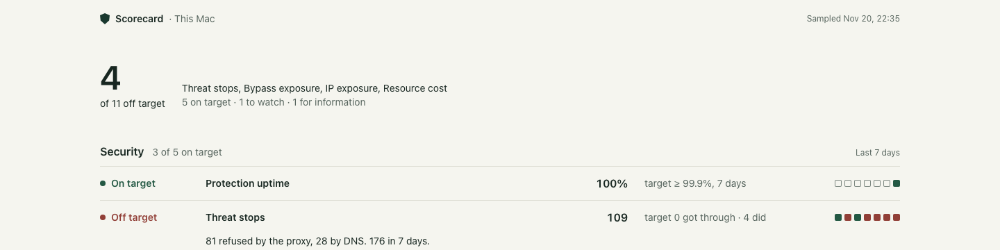

Do and don't
Crops from the v0.5.0 captures, annotated, beside the redesigned equivalent. Rules referenced are in DESIGN.md.
Colour as decoration, chips as hierarchy (popup)
Don't

123- 1Tracked uppercase mono eyebrow: mono used as decoration.
- 2Forest block: a colour that is not a state, carrying the hierarchy.
- 3Four pills of equal weight wrapping raggedly; categories belong on a second level.
Do

Principles 1–3: one display number on paper, three facts in a metric row, one control.
The same action on every row, clipped at the edge (popup)
Don't

123- 1"Allow 15 min" repeated on every row at rest.
- 2The last one is cut by the scroll edge: a clipped control.
- 3Two tags per row, one wrapping under the other.
Do

Section 6, trailing action: shown only on hover, focus or selection. Categories are group titles; one type word per row.
Truncated mid-word (Mac popover)
Don't

123- 1"Example City…· lockdown on": the place name cut mid-word.
- 2"In 11 of 1…e profiles": the number itself is cut.
- 3"EXIT" eyebrow and "Test…d": decoration plus another cut.
Do

Section 8: details that can be long get their own line; relay names never break.
A graphic that needs a caption (Mac Overview)
Don't

123- 1Four unlabelled rings: which one is the DNS filter?
- 224 radial ticks: lengths on a circle cannot be compared.
- 3A three-line caption explaining how to read it.
Do

Principle 4 and section 12: the Path labels each wall in place; a reduced wall is dashed, a wall that is down has a hole.
Three big-number treatments on one screen (Mac Overview)
Don't
- 1Number alone with a sentence of breakdown under it.
- 2Number with a pill beside it and a paragraph below.
- 3Number with an inline label and an explanatory sentence.
Do

Section 6, metric: value above label, one role per row, no pills, no explanations.
Hero cards and excess precision (scorecard)
Don't

123- 1"100.00%": two decimals that say nothing.
- 2Pill state chips inside forest blocks: colour and container doing the hierarchy.
- 3Paragraphs inside each card explaining the method.
Do

Section 12: the focal count names what is off target; every KPI is one aligned row.